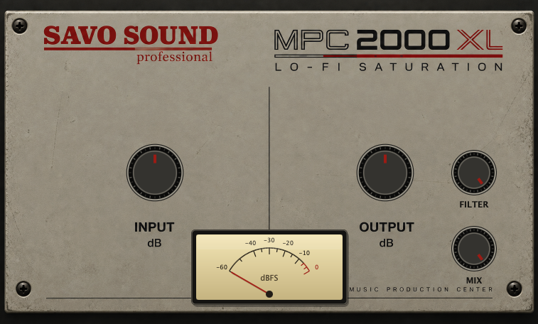

2000XL is a character processor inspired by the signal path and sonic character of the classic MPC 2000XL.
At its core, the plugin draws inspiration from the character introduced by the original machine’s ADC, DAC and filtering. These stages form the foundation of 2000XL, bringing some of the distinctive color and feel associated with audio passing through classic sampling hardware.
To complement this character, a distinctive saturation stage is added according to personal preference, bringing additional warmth, weight and harmonic color to the sound. This gives 2000XL a character of its own while retaining the classic sampling hardware as its main inspiration.
Input controls how hard the processed path is driven, while Output sets the level of the processed signal. Mix blends the complete 2000XL processing with the untouched original input, allowing the effect to be used fully wet or blended in parallel.
Unzip the downloaded file and copy 2000XL.vst3 to:
~/Library/Audio/Plug-Ins/VST3/Restart your DAW and rescan your plugins if necessary.
DOWNLOADUnzip the downloaded file and copy 2000XL.vst3 to:
C:\Program Files\Common Files\VST3\Restart your DAW and rescan your plugins if necessary.
DOWNLOAD